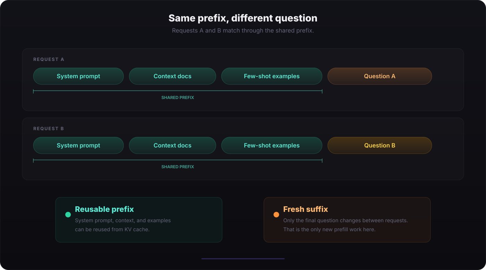
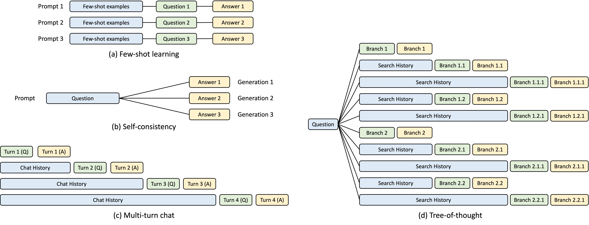
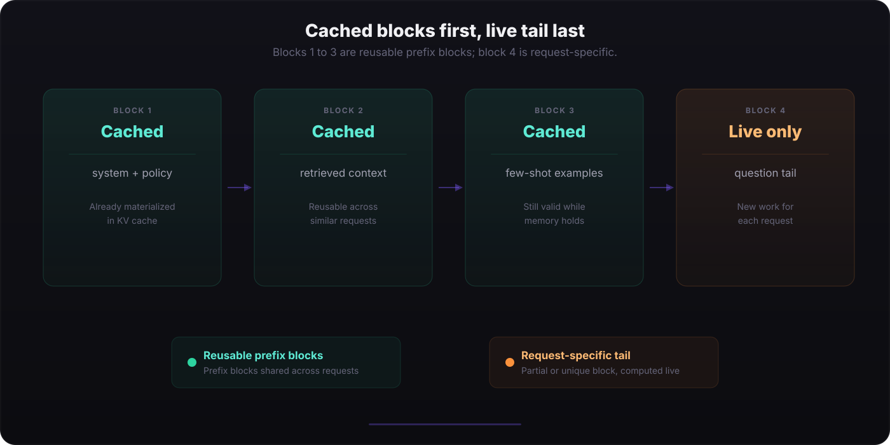
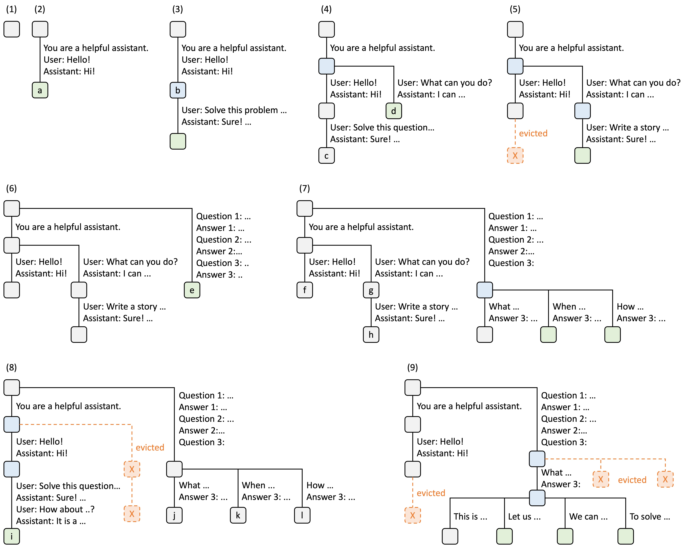
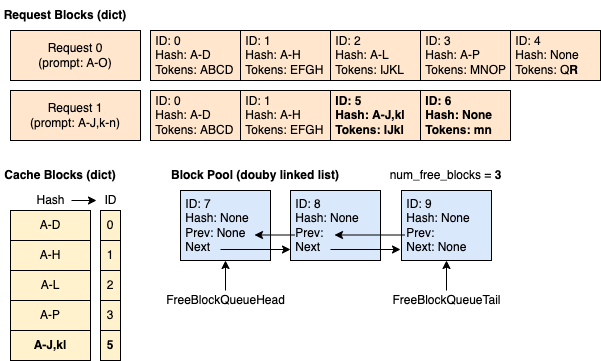
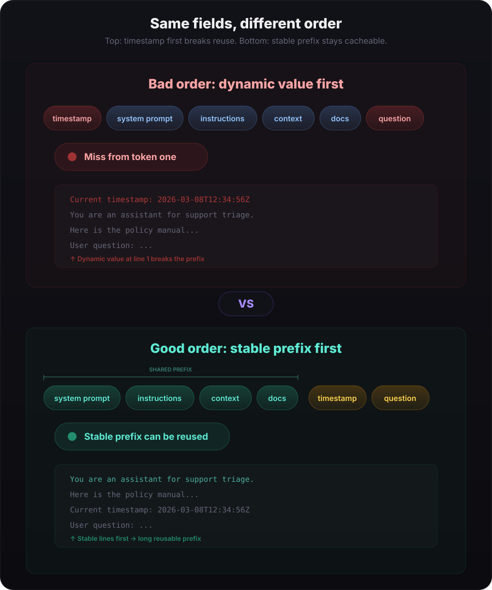
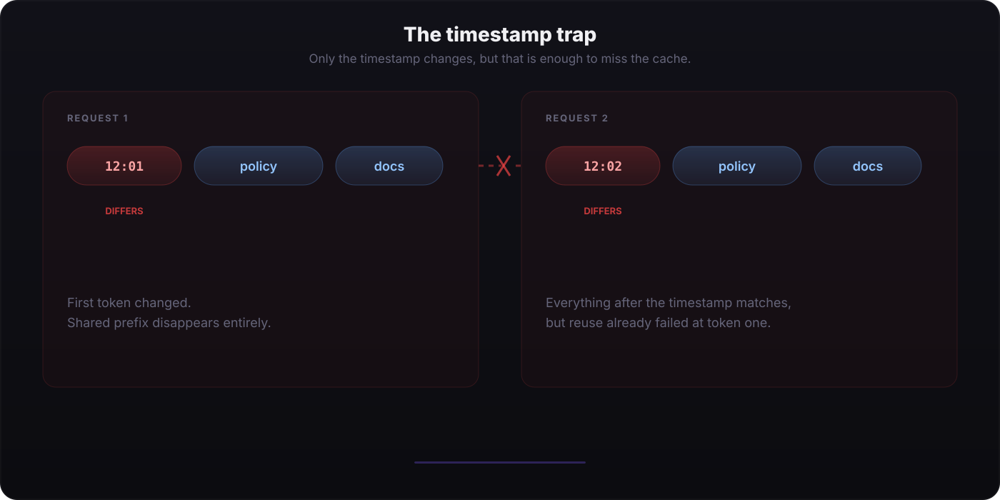

How prefix caching works (and how I broke it)
I put a timestamp before 6,000 tokens of shared context. That was enough to lose the cache hits.

I had a workload with a long system prompt and a short question at the end. Most of the prompt stayed the same between requests, so I expected prefix caching to save a lot of prefill work. It wasn't working as well as it should have. My prompt builder was adding a fresh timestamp before all that shared text.
1. What is prefix caching?
During prefill, the model processes the prompt tokens, typically in parallel, and writes their key/value tensors into the KV cache. When another request starts with the same tokens, the inference engine can reuse that cached state and skip the repeated computation.
This helps when a large part of the prompt stays the same: a system prompt, instructions, retrieved documents, tool schemas, policy text, or a table. You can cache that shared beginning and process the new question at the end.

The tokens have to match exactly, in the same order. Rewording a sentence can break the match even when its meaning stays the same. Semantic caching, which matches by meaning, is a separate technique.

2. How different systems implement it
vLLM, SGLang, OpenAI, and Anthropic all support prefix caching. They differ in how they store the cache and what you need to configure.



A-J,kl block separately. (Source: vLLM documentation)
vLLM
vLLM's KV cache manager hashes each block using its tokens and the prefix before it. For a new request, it looks up those hashes and reuses matching blocks. Only full blocks can be reused; a partial block at the end has to fill up before it can be cached.
In this example, both requests use the same instructions and table. Only the question changes:
from vllm import LLM, SamplingParams
llm = LLM(
model="meta-llama/Meta-Llama-3.1-8B-Instruct",
enable_prefix_caching=True,
)
sampling = SamplingParams(temperature=0, max_tokens=64)
common_prefix = """
You are a careful assistant.
Use the table below to answer the question.
| id | name | age |
|----|------|-----|
| 1 | Ava | 29 |
| 2 | Ben | 41 |
"""
prompt_a = common_prefix + "\nQuestion: What is Ava's age?"
prompt_b = common_prefix + "\nQuestion: What is Ben's age?"
# First request computes and caches the shared prefix.
llm.generate(prompt_a, sampling)
# Second request can reuse the cached prefix.
output_b = llm.generate(prompt_b, sampling)[0]
print(output_b.outputs[0].text)
The second request can reuse any full blocks from the shared prefix. As of v0.11, vLLM uses sha256 as its default block hash algorithm.
SGLang (RadixAttention)
SGLang uses RadixAttention for prefix caching. It is enabled by default when serving, unless you pass --disable-radix-cache when starting the server.
It can reuse a stable system prompt across chat turns, or shared documents across several questions. The example below uses the same system prompt for both calls.
# Start the server separately:
# sglang serve \
# --model-path meta-llama/Meta-Llama-3.1-8B-Instruct \
# --port 30000
from sglang import (
RuntimeEndpoint,
assistant,
function,
gen,
system,
user,
)
from sglang.lang.api import set_default_backend
@function
def qa(s, question):
s += system("You are a careful assistant.")
s += user(question)
s += assistant(gen("answer", max_tokens=64))
set_default_backend(RuntimeEndpoint("http://localhost:30000"))
# Both calls share the system prompt prefix automatically
qa.run(question="What is 2 + 2?")
qa.run(question="What is 3 + 5?")
The runtime looks up the shared prefix in the radix tree, then computes the new part of each request.
OpenAI API
OpenAI automatically caches prompts of 1024 tokens or more. Check usage.prompt_tokens_details.cached_tokens to see how many tokens were reused. The docs also recommend a consistent prompt_cache_key for matching requests to help route them to the same cache.
from openai import OpenAI
client = OpenAI()
shared_system = (
"You are a legal analyst. "
"Use the contract below to answer questions.\n\n"
+ contract_text
)
# Request 1
r1 = client.chat.completions.create(
model="gpt-4.1",
prompt_cache_key="contract-analysis-v1",
messages=[
{"role": "system", "content": shared_system},
{"role": "user", "content": "What is the termination clause?"},
],
)
# Request 2 — same prefix, different question → cache hit
r2 = client.chat.completions.create(
model="gpt-4.1",
prompt_cache_key="contract-analysis-v1",
messages=[
{"role": "system", "content": shared_system},
{"role": "user", "content": "What are the payment terms?"},
],
)
# Check cache stats
print(r2.usage.prompt_tokens_details.cached_tokens)
With the default in-memory policy, cached prefixes generally last for 5 to 10 minutes of inactivity, up to a maximum of one hour. Supported models also accept prompt_cache_retention for 24-hour retention.
Anthropic API
Anthropic supports automatic and explicit caching. For automatic caching, add cache_control at the top level of the request. The cache breakpoint starts at the last cacheable block and moves forward as the conversation grows. You can also set up to four breakpoints yourself.
import anthropic
client = anthropic.Anthropic()
r1 = client.messages.create(
model="claude-sonnet-4-5",
max_tokens=1024,
cache_control={"type": "ephemeral"},
system=(
"You are a legal analyst. "
"Use the contract below...\n\n"
+ contract_text
),
messages=[
{"role": "user", "content": "What is the termination clause?"},
],
)
r2 = client.messages.create(
model="claude-sonnet-4-5",
max_tokens=1024,
cache_control={"type": "ephemeral"},
system=(
"You are a legal analyst. "
"Use the contract below...\n\n"
+ contract_text
),
messages=[
{"role": "user", "content": "What are the payment terms?"},
],
)
# Cache stats in the second response
print(r2.usage.cache_read_input_tokens)
print(r2.usage.cache_creation_input_tokens)
A 5-minute cache write costs 1.25× the base input rate. A 1-hour write costs 2×, and a cache read costs 0.1×. The default minimum TTL is 5 minutes and refreshes on use. The minimum cacheable length depends on the model: 1024, 2048, or 4096 tokens.
How to order the prompt
- Keep the system prompt stable across requests.
- Place large shared context before request-specific details.
- Put changing fields near the end.
- Keep formatting identical so the tokens match too.
3. The timestamp bug
I put the current time at the very start of my prompt, before the instructions and context.
Each request started with something like “Current timestamp: 2026-03-08T12:34:56Z”. A few opening tokens still matched, but the changing timestamp broke the prefix before the engine reached the long shared section.
Why I missed it
The responses were still correct. The problem showed up in latency, which didn't give me much to go on. A self-hosted model can slow down for plenty of reasons: VRAM pressure, longer prompts, queueing, batching, network delay, or other serving bottlenecks.
A timestamp at the top also looks reasonable when you're reading the prompt. It's context for the model. But if the first token changes, the cache can't reuse the next 4,000 tokens as a prefix, even if they're identical. You have to compare what the prompt builder actually sends across requests to see the problem.
The slowdown and the fix
My system prompt was around 6,000 tokens of instructions, examples, and context, followed by a short user query. The prefill rate, the speed at which the engine processes input before generating the first output token, was at least 1.5× worse than I expected. Most of those 6,000 tokens should have been reusable after the first request.
It took me a while to trace it to my prompt builder. It generated a fresh ISO 8601 timestamp on every call and inserted it at the top. That left nearly the whole system prompt to be recomputed each time. I moved the timestamp after the stable prefix, and the cache hits returned immediately. Prefill throughput recovered, time to first token (TTFT) dropped, and GPU utilization during prefill went down noticeably.
If you see a similar slowdown, compare the first few tokens across requests. Prompt construction is one possible cause; cache eviction, routing, and serving configuration are also worth checking.


policy and docs tokens, but the first chip differs: 12:01 versus 12:02.
The timestamp could stay in the prompt. It just needed to come after the text that was identical across requests. The same applies to user IDs and other request metadata.
What I check now
- Compare consecutive prompts to find the shared text.
- Put that text first.
- Append timestamps, user IDs, and request metadata after it.
- Check formatting as well as content; whitespace can change the tokens.
- Include workloads with long prompts when benchmarking, and measure prefill performance alongside total latency.
Check the actual prompts
In my case, moving one line fixed the cache misses. If your hit rate is lower than you expect, look at two prompts after all the template fields have been filled in. Find the first token that differs. That tells you how much of the beginning the cache can potentially reuse.
References
- vLLM design notes on automatic prefix caching
- vLLM automatic prefix caching example
- SGLang frontend tutorial and
RuntimeEndpointusage - SGLang server arguments, including radix-cache controls
- SGLang & RadixAttention — fast and expressive LLM inference (LMSYS blog)
- OpenAI prompt caching guide
- OpenAI chat object fields, including
cached_tokens - Anthropic prompt caching documentation